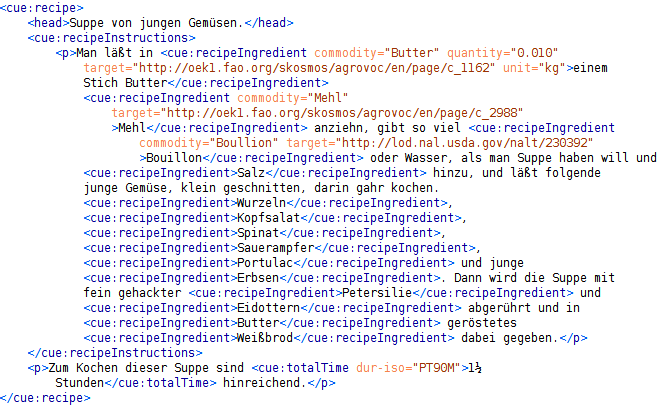
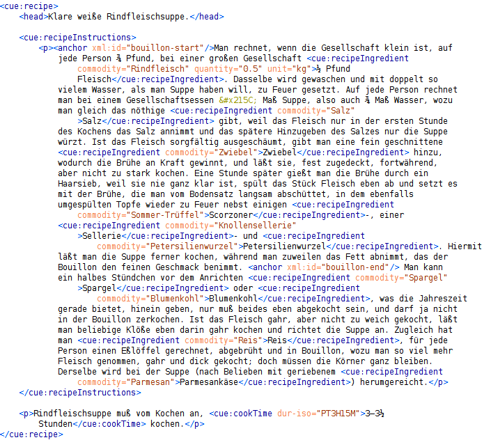
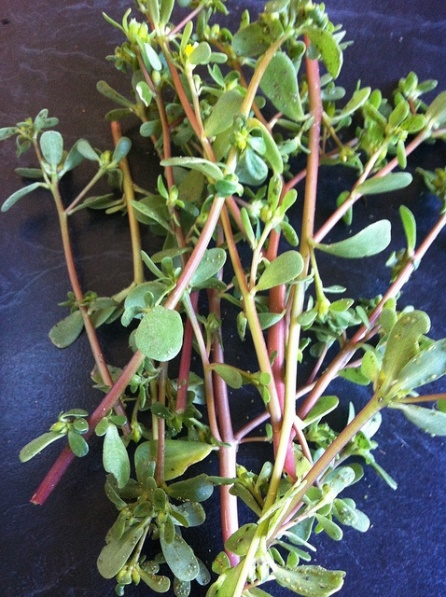
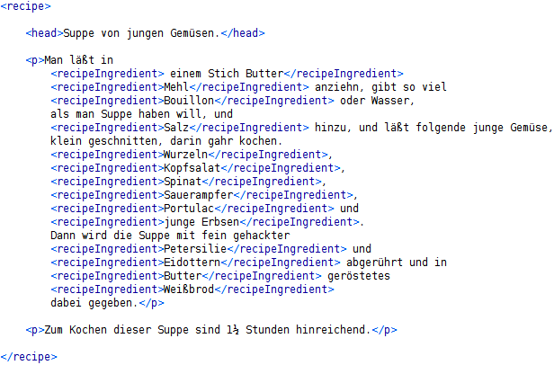
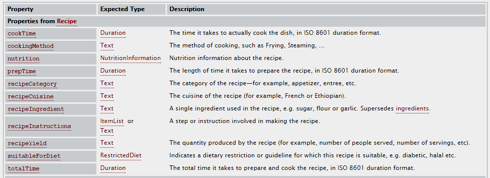
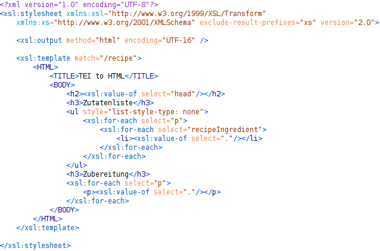
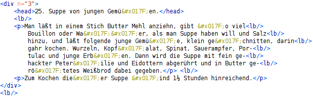
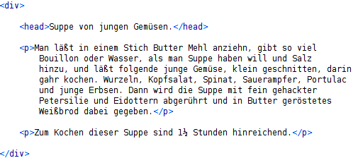
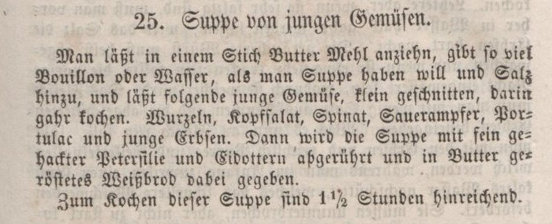

Wie entsteht eigentlich die Idee zu einer Master-Arbeit? Wie finden Professor und Student zusammen? Ist es von der Idee bis zur Abgabe eine Einbahnstraße, oder werden immer und immer wieder über neue Stolpersteine gestolpert, neue Inspirationen inspiriert, neue ... ? Selbstverständlich sind letztere Punkte der Fall - Ansonsten hätte man offensichtlich nichts dazugelernt! Dieser Blog verdeutlich dies und gibt darüber hinaus Einsichten in unsere Arbeitsweise; was u.A. die anderen Fragen mit abdeckt.
Ehrlicherweise muss ich gestehen, dass das kein echter Blog ist (auch wenn das eine gute Idee gewesen wäre, wie in wissenschaftliches Arbeiten im 21. Jahrhundert disskutiert). Hier sind unsere niedergeschriebenen Gedankengänge, die nachträglich in diesen Blog umgewandelt wurden. Im Allgemeinen kann ich das Niederschreiben von Gedankengängen jedem nur wärmstens empfehlen. Es hilft die Gedanken zu sortieren und auszupfeilen. Des Weiteren zeigt einem das Niederschreiben brutalst, wo man etwas noch nicht genau verstanden hat; nämlich genau da, wo man beim Schreiben stockt. Dies ist etwas sehr positives, da man so geradezu zum Nachdenken über die Schwierigkeiten gezwungen wird. Auch können andere dann die Gedanken und ggf. Schwierigkeiten lesen, nachvollziehen und einem beim Arbeiten unterstützen. So werden früh Irrewege abgekürzt, was die Zeit des Niederschreibens mehr als wieder einholt :)
Angefangen hat alles damit, dass mein betreuender Professor Herr Luttenberger Frau Davidis' Kochbuch geschenkt bekommen hat. Er hat dann natürlich angefangen, sich darüber Gedanken zu machen. Diese Gedanken hat er in einem Word-Dokument Tagebuch-ähnlich niedergeschrieben. Diese Einträge bilden quasi den Startschuss und daher fängt dieser Blog mit ihnen an (der unterste Beitrag dieses Bloges ist der Erste). Wem die automatische HTML-Konvertierung von Word plus etwas Handarbeit zu hässlich ist, kann das original Word-Dokument auch hier herunterladen.
In der Vorlesung Web-Technologien hat Herr Luttenberger kurz das Paper vorgestellt, welches die westliche mit der asiatischen Küche vergleicht. Ich konnte mit meinem Koch-domänen-spezifischen Wissen glänzen, dass Muskatnuß und Muskatblüte zwei unterschiedliche Gewürze sind (s. hier). Nach der Vorlesung hat Herr Luttenberger mich dann angeworben, ob ich nicht Lust hätte als SHK die Reise mit Davidis's Kochbuch zu teilen. Wie hoffentlich an dieser Webseite ersichtlich ist, bin ich mit viel Herzensblut vorangestürmt. Doch diese Webseite ist natürlich viel mehr als ein kurzer 100m Sprint.
Zunächst habe ich mich also als SHK 3 Monate mit dem Kochbuch beschäftigt. Man könnte sagen, ich habe den Blog von Herrn Luttenberger damit übernommen. Ähnlich wie er, habe ich regelmäßig meine Gedankengänge und neuen Erkentnisse Tagebuch-ähnlich niedergeschrieben. Diese Einträge bilden somit den 2. Teil des Blogs.
Da viele Erkenntnisse der Form waren Das passt noch nicht wirklich, haben wir an die SHK-Tätigkeit diese Master-Arbeit drangehangen. Mittwochs gibt es bei Herrn Lutternberger immer ein Seminar, in dem einige Studenten ihre neuesten Erkenntise bezüglich ihrer Abschluss-Arbeiten vorstellen. Die PDFs meiner Präsentationen bilden den 3. Teil des Blogs. Da ich die Metapher eine Abschluss-Arbeit mit einer Reise zu vergleichen sehr schön finde, habe ich jeder Präsentation einen Titel gegeben, so wie jedes Kapitel eines guten Romans einen Titel hat. Vor jedem PDF gönne ich mir daher ein bis zwei Sätze, um die Assoziation mit dem Titel zu erläutern.
Abschließend nach diesem langen Vorwort noch alle Title meiner Präsentationen - sind diese nicht viel versprechend?
Herr Luttenberger hat mich ermutigt eine Blog-Serie bezüglich meiner HiWi-Tätigkeit zu schreiben. Ich komme dem gerne nach; zu einem ist dies eine (ich bemühe mich) nett zu lesende Dokumentation. Zum anderen „nötigt“ es mich ab und an innezuhalten und zu überlegen, was ich niederschreibe/mache – und dies ist meist mit einem kritischen Hinterfragen verbunden, welchem manchmal tolle Aha-Effekte folgen, was immer gut ist. In der Hoffnung von vielen Aha-Effekten auch dieser Block-Titel. [Blog - Tosten Knaufs Aha-Effekte]
Grob gesagt ist das Ziel meiner Tätigkeit Henriette Davidises Kochbuch, welches bereits eingescannt und als XML-Format abgetippt hier vorliegt, maschinell auszuwerten und zu transformieren. Dazu muss das Buch zuerst durch Meta-Daten/XML-Tags angereicht werden. Anschließend können diese mittels XSLT beliebig transformiert werden. Das abschließende Ziel ist es, die Rezepte in einer Webseite in heute üblicher Form präsentieren zu können.
Beim nochmaligen Durchlesen unseres Rezepts für die Suppe von jungen Gemüsen ist mir weiteres Problem aufgefallen, das ohne kulinarische Kenntnisse nicht gelöst werden kann. Was, bitteschön, ist den "Bouillon"?
Möglicherweise nicht ganz exakt kann man Bouillon als ein Halbfertigprodukt klassifizieren. D.h. eine Bouillon wird unabhängig von dem Gericht produziert, in dem sie schlussendlich verwendet wird. Und sie ist auch für sich allein konsumierbar.
Aber jetzt kommt die entscheidende Frage: Wer hat die Bouillon produziert?
Es könnte sein, dass Henriette Davidis vorschlägt, ein industriell gefertigtes Extrakt à la Liebigs Fleischextrakt zu verwenden, um eine Bouillon zu verwenden, oder sie könnte ein Rezept angeben, um eine Bouillon selbst zu kochen. Kochbuch-lesen ist angesagt!
(In diesem Kontext kann ich mir einen Lesehinweis nicht verkneifen: Unter http://geb.uni-giessen.de/geb/volltexte/2004/1381/pdf/SdF-2003-1_2b.pdf findet man die außerordentlich interessante "Geschichte von Liebigs Fleischextrakt" sehr lesenswert!)
Beim Rezept für die "Krebssuppe" findet man den entscheidenden Hinweis: "Man kocht nach No. 1 eine gute Bouillon." Und was finden wir unter No. 1? Leider nicht etwa ein Rezept für eine Bouillon, sondern ein Rezept für eine "Klare weiße Rindfleischsuppe". In dieses Rezept ist das Rezept für die Bouillon hineingesteckt worden die klare weiße Rindfleischsuppe wird auf der Basis einer Bouillon hergestellt, hat aber noch weitere Zutaten, z.B. "beliebige Klöße" ein weiteres Halbfertigprodukt. Den Klößen hat Henriette Davidis ein eigenes Hauptkapitel gewidmet, nämlich in der vorliegenden Ausgabe das Kapitel L. (In der Ausgabe, die Jesper mir geschenkt hat, ist es das Kapitel O.) Naja, so könnte man sich wahrscheinlich durch das ganze Kochbuch hindurchhangeln
Was bedeutet das für unsere kulinarische Analyse?
1. Aus dem Rezept für die "Klare weiße Rindfleischsuppe" muss das Rezept für Bouillon herausgelöst werden. Dazu muss man den Text sehr, sehr genau lesen; es ist nicht auf Anhieb erkennbar, wo das eine Rezept in das andere übergeht. Kulinarischer Sachverstand ist gefragt. Dieses herausgelöste Rezept muss als solches erkennbar gemacht werden.
2. Unser tag <recipeIngredient>, mit dem wir die "Bouillon" im Rezept für die "Suppe von jungen Gemüsen" ausgestattet haben, benötigt ein weiteres optionales Attribut, nämlich ein Attribut, das einen Verweis auf ein weiteres Rezept im Kochbuch der Henriette Davidis angibt.


Ich habe noch einmal unser Rezept für die "Suppe von jungen Gemüsen" durchgelesen. Steht das wirklich drin, dass man den "Portulac" kochen soll? Ich kann es nicht fassen. Diese zarten, leicht säuerlichen Blättchen soll man wirklich in einer Suppe verkochen? Das ist doch ein leckerer Salat!!! Das geht ja gar nicht!
Eine
Nachfrage bei einer Bekannten, die an der CAU im Bereich
Ernährungswissenschaften arbeitet, hat das Missverständnis aufgeklärt: Die
Bezeichnung Portulak wird sowohl für den hier links im Bild gezeigten Salat
benutzt (der auch Postelein oder gewöhnliches Tellerkraut genannt wird), als
auch für ein Gemüse, das im Deutschen als Gemüse-Portulak bezeichnet wird. Ein
Bild vom Gemüse-Portulak habe ich nicht in meinem Fundus, deshalb hier ein Flickr-Bild
von Alex "Skud" Bayley.

Warum diese ausführliche Diskussion? An dieser Stelle ist mir klar geworden, was eigentlich immer schon klar war: Das inhaltsorientierte Auszeichnen von Text ist keine "mechanische" Tätigkeit, im Gegenteil: Sie verlangt an vielen Stellen eine sehr gute Sachkenntnis. Oder wie man sagen würde: ein sehr gutes Domänen-Wissen.
In einem anderen Rezept habe ich gelesen, dass eine Zutat verwendet werden soll, die als "Scorzoner" bezeichnet wird. Was ist denn das, bitteschön? Kann bitte jemand helfen?
Immer noch machen uns die Mengenangaben in den Rezepten der Henriette Davidis gewisse Probleme.
Es gibt solche Mengenangaben wie "ein Stich Butter". Naja, für eine geübte Köchin ist zwar klar, was damit gemeint ist, aber diese Mengenangabe ist natürlich ganz und gar ungeeignet, wen man für das Suppenrezept eine Nährwertanalyse erstellen will. Da hilft nur eine exakte Angabe in einer definierten Maßeinheit.
In unserem Rezept für die "Suppe von jungen Gemüsen" werden wir die Zutat Butter deshalb wie folgt auszeichnen:
<recipeIngredient commodity="Butter"
quantity="0.010" unit="kg">
einem Stich Butter</recipeIngredient>
Der Wert des Attributs commodity bezeichnet das Lemma der im Rezept genannten Zutat. Woher ich dieses Lemma beziehe, muss ich noch klären.
Für alle anderen Zutaten gibt es keine Mengenangaben. Ja, es gibt nicht einmal eine Angabe, für wie viele Esser das Rezept gedacht ist. Da kann man nichts machen. Eine Nährwertberechnung kann hier nicht vernünftig durchgeführt werden.
In anderen Rezepten gibt es Mengenangaben pro Portion. Hier scheint es mir vernünftig, die Mengenangaben bei der Auszeichnung auf eine jeweils eine Portion umzurechnen.
Heute nur ein ganz kurzer Blogpost: In ihrem Artikel "Flavor network and the principles of food pairing" zeigen die Autoren Yong-Yeol Ahn, Sebastian E. Ahnert, James P. Bagrow und Albert-László Barabási, was man über die Unterschiede zwischen der amerikanischen und der asiatischen Küche durch die kulinarische Analyse von ca. 56.000 (!) Rezepten herausfinden kann. Für jeden, der gerne kocht, ein must-read! Und für jeden, der sich mit big data beschäftigen möchte, ebenfalls ein must-read!
Vielleicht schaffen wir es ja, mit den Methoden, die die genannten Autoren vorschlagen, etwas Vergleichbares über deutsche Rezepte und ihre Veränderungen im Laufe der Zeit auszusagen.
Ohne lange Vorrede schreibe ich jetzt auf, was mir an der Lösung, die ich im letzten Blogpost präsentiert habe, noch nicht gefällt:
1. Das tag <recipeIngredient> schließt die Angabe für die Menge und für die Art der Zutat ein. Diese Angaben sollen aber separierbar sein. Dazu werde ich dem tag <recipeIngredient> eine Menge von Attributen hinzufügen, die eine Messung beschreiben. Eine solche Attributmenge ist in TEI enthalten, sie heißt att.measurement. Wir werden noch zu klären haben, auf welche Anzahl von Portionen sich eine Mengenangabe bezieht.
In gleicher Intention werde ich den tags cookTime und totalTime die TEI-Attributmengen att.duration und att.duration.iso hinzufügen.
2. Unschön ist auch, dass in unserer Zutatenliste eine Angabe im Dativ erscheint: "einem Stich Butter". (Hier macht sich der Dativ zwar nur bei der Mengenangabe bemerkbar, aber selbstverständlich kann man sich auch eine in das Rezept eingestreute Zutatenangabe vorstellen, in der auch die Art der Zutat in gebeugter Form angeführt wird.) Wir benötigen ein Attribut, in dem die Grundform des jeweils verwendeten Worts genannt wird. In der Sprachwissenschaft wird eine solche Grundform als Lemma bezeichnet.
3. Ganz im Sinne des Semantic Web möchte ich die Zutaten als resources auffassen. Der RFC 3986 sagt:
"A resource is not necessarily accessible via the Internet; e.g., human beings, corporations, and bound books in a library can also be resources."
Damit können sicherlich auch die Zutaten zu einem Rezept als Ressourcen aufgefasst werden.
Im Semantic Web werden Ressourcen über URIs identifiziert, vgl. RFC 3986. Ich wünsche mir also eine Ressourcensammlung, in der alle denkbaren Zutaten aufgelistet sind und jede Zutat über einen Uniform Resource Identifier identifiziert wird. Man könnte es auch anders formulieren: Ich wünsche mir ein kontrolliertes Vokabular, das RDF-codiert ist. RDF bedeutet "Resource Description Framework", und in diesem Framework werden Ressourcen per URI identifiziert.
In einem solchen RDF-codierten kontrollierten Vokabular sollten nicht nur die Zutaten einfach aufgelistet sein. Zu jeder Zutat sollten auch die üblichen natürlichsprachlichen Bezeichnungen ("labels") in einer Menge von Sprachen genannt werden (die dann auch als Lemmata genutzt werden könnten, womit das oben postulierte Attribut entfallen könnte). Zusätzlich sollten für jede Zutat ggf. Verweise ("links") auf weitere Datenbestände enthalten sein, in denen sich z.B. Nährwertangaben oder andere Angaben finden lassen. Wenn all das, was ich mir wünsche, dann auch noch frei über das Netz zugreifbar ist, dann nennt man Linked Open Data (LOD).
Und jetzt treiben wir es noch ein bisschen weiter: Ich möchte in meinem RDF-codierten Vokabular nicht nur labels und links, sondern zusätzlich noch eine taxonomische Einordnung für jede Zutat, also z.B. "purslane (dt. Portulak) is-instance-of vegetable". (Zum Thema is-a und is‑instance-of vgl. die Dissertation und diesen Blogpost von Jesper Zedlitz.) Mit Taxonomien sind weitere Probleme verbunden, die ich aber hier nicht ausführlich diskutieren werden.
Du ahnst es, liebe Leserin, einen solchen Datenbestand bzw. eine solche Kombination von Datenbeständen habe ich nicht gefunden.
Ich werde in einem späteren Blogpost darauf zurückkommen.
Man könnte sagen, bis jetzt haben wir nur preprocessing betrieben: Uns liegen die Rezepte des "Praktischen Kochbuchs für die gewöhnliche und feinere Küche" von Henriette Davidis endlich als Text vor, der nur durch <head> und <p> tags strukturiert ist.
Wir können uns jetzt daranmachen, den Text weiter auszuzeichnen, oder, um in der Sprache der TEI Guidelines zu sprechen, unsere features of interest durch Einfügen spezieller tags hervorzuheben und damit der maschinellen Verarbeitung zugänglich zu machen. Was sich ja bei mehr als 1.200 Rezepten sicherlich lohnt. Mein spezielles Interesse richtet sich auf die kulinarischen Details aller Rezepte, und ich will anhand der "Suppe mit jungen Gemüsen" zeigen, wie ich vorzugehen gedenke.
Bevor ich loslege, eine Vorbemerkung: Andere Nutzer unseres Kochbuchs mögen andere Interessen haben. Vielleicht ist es für Philologen interessant, sich mit der Rechtschreibung im Rezept auseinanderzusetzen. Linguisten interessieren sich vielleicht für den Satzbau im Kochbuch. Da gibt es bestimmt noch viele andere Interessen.
Ich kann es mir im Moment nur schwer vorstellen, dass man Texte so umfassend auszeichnen kann, dass die Auszeichnung allen Interessen gerecht wird. Anders formuliert: Es gibt wahrscheinlich nicht die eine digitale Edition eines Textes, die allen Bedürfnissen gerecht wird; im Idealfall gibt es eine Kollektion von digitalen Editionen, die vielen Interessen gerecht wird.
Liebe Leserin, wie in jedem guten Roman gibt es jetzt auch hier kurz vor dem Ende der Geschichte noch eine Verzögerung, man könnte auch sagen: eine künstliche Verzögerung. In jedem guten Roman haben Held und Heldin, bevor sie sich endlich kriegen, noch einmal einen handfesten Krach, und in dieser Serie von Blogposts schreibe ich jetzt auf, was ich nicht will.
Im Netz bin ich auf eine langstielige Abhandlung[1] gestoßen, in der zunächst begründet wird, warum man ein Kochbuch nicht nur als eine Sammlung von Anleitungen zur Herstellung mehr oder weniger leckerer Gerichte auffassen dürfe, sondern darüber hinaus als ein kulturelles Artefakt begreifen müsse. Naja, ehrlich gesagt: Das war mir auch schon vorher klar. Um zu verdeutlichen, was sie damit meinen, vergleichen die Autoren dann ein Kochbuch von Nigella Lawson, einer englischen Erfolgsköchin, mit einem Kochbuch von Jamie Oliver, einem englischen Erfolgskoch. Mal davon abgesehen, dass aus dieser Auswahl kein besonders ausgeprägter international mind set spricht (an dessen Vorhandensein man im Nach-Brexit-England vielleicht überhaupt einige Zweifel anmelden müsste), kommen die Autoren zu der Erkenntnis, dass es schon ein Zeichen von unterschiedlicher Kultur ist, wenn Nigella Lawson in rückwärtsgewandter Manier bei jedem Rezept betont, dass auch ihre Mutter schon so gekocht habe, während Jamie Oliver sich lässig auf der Couch sitzend mit seinen Kumpels inszeniert. In ähnlicher Intention intoniert Lucy Scholes[2]: " female TV chefs such as Smith and Lawson are still shown for the most part in their kitchens and their horizons rarely seem to stretch beyond the domestic sphere. Oliver, on the other hand, represents a new brand of chef who has taken off his apron and taken to the streets, rebranding himself as a social activist or even in his own terms a revolutionary."
Weder Mutter noch Couch noch Revolution sind meine features of interest. Mir geht es um Kulinarik, mich interessieren die Rezepte selber, nicht ihre Inszenierung. Mich interessieren Zutaten und Zubereitung. Und alles was dazu gehört. (Allenfalls könnte ich versucht sein, die Frage zu beantworten, ob denn die Rezepte von Jamie Oliver wirklich erkennbar anders komponiert sind als die von Nigella Lawson. Aber das will ich nicht aus den Kochbuch-Vorwörtern, -Klappentexten oder -Fotos herauslesen. Sondern aus den Rezepten.)
Ich entwerfe jetzt einmal eine kulinarische Auszeichnung für unser Gemüsesuppen-Rezept bzw. für das Kochbuch von Henriette Davidis. Leider kann ich mich dabei nur wenig an dem Beispiel orientieren, das in den TEI Guidelines auf den Seiten 1020ff. widergegeben ist: In diesem Beispiel wird ein Quelltext verwendet, in dem Zutatenliste und Zubereitungsanleitung bereits voneinander getrennt sind. Ich will im Unterschied dazu eine Auszeichnung angeben, die es ermöglicht, durch eine XSLT-Transformation aus dem vorhandenen Quelltext ein Rezept mit einer "heutigen Struktur" zu erzeugen. Dazu werde ich die im Text genannten Zutaten jeweils einzeln taggen. Was ich dafür brauche, sind einige "kulinarische tags". Da diese im TEI-Vokabular nicht vorgesehen sind, muss ich das TEI-Vokabular geeignet erweitern. Was dabei herauskommen wird? Nichts weniger als eine Auszeichnungssprache für kulinarische Editionen. Oder abgekürzt: eine culinary editions markup language (cueML, auf Deutsch passenderweise wie "Kümmel" auszusprechen).
Die Guidelines sehen die Möglichkeit zur Erweiterung des TEI-Vokabulars explizit vor:
" the TEI scheme may be extended in well-defined and documented ways for texts that cannot be conveniently or appropriately encoded using what is provided. For these reasons, it is almost impossible to use the TEI scheme without customizing or personalizing it in some way."

Um diesen Blogpost nicht zu überfrachten, verzichte ich zunächst auf die
Darstellung der Formalitäten, die eingehalten werden müssen, wenn neue tags kreiert werden sollen.
Ich versuche jetzt mal, die Idee die hinter dieser Auszeichnung steckt, zu verallgemeinern.
1.
Die tag names übernehme ich aus den properties des
schema.org type
recipe.
(Den type
recipe
habe ich benutzt, um damit das <div> tag zu ersetzen, das in der ursprünglichen digitalen
Edition ein Rezept eingeschlossen hat.) Damit habe ich (wenn ich die vererbten properties
hier erst einmal nicht zähle) die folgenden properties:
Schema.org/Recipe"/>
2. Die gewünschten tags sollen Fragmente des Originaltexts einschließen. Das bedeutet, dass diese tags nicht nur auf die jeweiligen Fragmente zeigen sollen, z.B. durch bestimmte Attribute. Damit wird eine ähnliche Vorgehensweise erreicht, wie sie auch bei der semantischen Auszeichnung mit schema.org verwendet wird. Das TEI tag <span> ist z.B. ein tag, mit dem auf bestimmte, identifizierbare Textabschnitte gezeigt wird. Anders als das von HTML her bekannte <span> tag umschließt es jedoch den Text nicht.

Hier ein XSLT-Script, das aus unserer TEI-codierten Suppe eine HTML-Suppe
macht, die man besser lesen kann (naja, in diesem Satz sind wohl einige
Buchstaben in die Suppe gefallen
).
Und so würde es der Chrome-Browser anzeigen:
|
Suppe von jungen Gemüsen. Zutaten
Zubereitung Man läßt in einem Stich Butter Mehl anziehn, gibt so viel Bouillon oder Wasser, als man Suppe haben will, und Salz hinzu, und läßt folgende junge Gemüse, klein geschnitten, darin gahr kochen. Wurzeln, Kopfsalat, Spinat, Sauerampfer, Portulac und junge Erbsen. Dann wird die Suppe mit fein gehackter Petersilie und Eidottern abgerührt und in Butter geröstetes Weißbrod dabei gegeben. Zum Kochen dieser Suppe sind 1œ Stunden hinreichend. |
Das ist doch schon nicht schlecht!
Ob ich allerdings diese Suppe jemals kochen werde, ja, das weiß ich wirklich nicht: Ich kann mir nicht vorstellen, dass ein in Boullion oder Wasser gekochter Kopfsalat wirklich gut schmeckt But that's another story.
[1] Douglas Brownlie, Paul Hewer & Suzanne Horne: Culinary Tourism: An Exploratory Reading of Contemporary Representations of Cooking. Consumption, Markets and Culture, Vol. 8, No. 1, March 2005, pp. 726.
[2] Lucy Scholes: A slave to the stove? The TV celebrity chef abandons the kitchen: lifestyle TV, domesticity and gender. Critical Quarterly Special Issue: Food, edited by Lucy Scholes and Matthew Taunton, Vol. 53, Issue 3, pp. 4459, October 2011.
Jetzt habe ich Dich, liebe Leserin, schon über zwei lange Blogposts mit der digitalen Edition des "Praktischen Kochbuchs für die gewöhnliche und feinere Küche" von Henriette Davidis geplagt aber noch immer bin ich noch nicht da angekommen, wohin ich eigentlich will: Ich will aus diesem Kochbuch die Rezepte extrahieren, und ich will aus den Rezepten die Zutaten extrahieren, und aus den extrahierten Zutaten will ich eine Zutatenliste bauen. Und dann will ich endlich kochen!!!
Leider werden wir auch heute unser Ziel noch nicht erreichen. Aber wir werden wieder einen Schritt weiterkommen: Wir werden es schaffen, aus dem ganzen großen Kochbuch alle Rezepte zu extrahieren.
Wo ist das Problem?
Wie wir ja festgestellt hatten, sind in der digitalen Edition des Deutschen Textarchivs die Rezepte als solche nicht gekennzeichnet; es gibt weder ein XML-Element <recipe>, in das Rezepte eingeschlossen worden wären, noch gibt es ein Attribut type="recipe", das ein <div>-Element näher spezifizieren würde.
Wir überlegen uns, dass ein Kochbuch ein strukturiertes Gebilde ist, das wie jedes Buch einen Vorspann, einen Hauptteil und einen Abspann hat. Wir erwarten die Rezepte im Hauptteil. Der Hauptteil zerfällt in eine Folge von Kapiteln ("Fleischgerichte", "Fischgerichte", "Suppen", "Süßspeisen" usw.), und in diesen Kapiteln erwarten wir die Rezepte. Wir wissen schon vorab, dass wir einige dieser Kapitel ausblenden müssen, da sie allgemeine Hinweise zum Einkauf, zur Zubereitung und zur Lagerung von Zutaten enthalten. Aber das ist im Moment noch nicht so wichtig.
Wir stellen uns nun als kundige IxEmEller einen XPath-Ausdruck vor, der alle Rezepte einsammelt. Dieser XPath-Ausdruck muss zunächst in den Hauptteil des Kochbuchs marschieren. Zum Glück ist das bei einer TEI-Codierung einfach: Dort wird der Vorspann mit dem tag <front>, der Hauptteil mit dem tag <body> und der Abspann mit dem tag <back> ausgezeichnet. Alle Kapitel des Hauptteils sind in <div>-Elemente eingeschlossen. Wo also ist das Problem? Da wir wissen, dass alle Rezepte in <div>-Elemente eingeschlossen sind, muss unser XPath-Ausdruck doch nur die in den <div>-Elementen (Kapitel) eingeschachtelten <div>-Elemente (Rezepte) finden.
So habe ich mir das gedacht.
Leider haben einige, aber nicht alle Kapitel des Kochbuchs Unterkapitel, und erst in diesen Unterkapiteln befinden sich die Rezepte, auf die wir es abgesehen haben; zum Kapitel "Fischgerichte" z.B. gehören die Unterkapitel "Seefische" und "Flussfische". Unser XPath-Ausdruck muss also angepasst werden: Unser XPath-Ausdruck muss je Kapitel unterscheiden, ob es Unterkapitel enthält oder nicht.
Ich frage mich wieder, ob die vom Deutschen Textarchiv vorgenommene Codierung besonders gut gelungen ist. Wäre es nicht sinnvoller gewesen, von einer Dokumentenstruktur auszugehen, in der alle Rezepte erst in Unterkapiteln stehen? Von der Codierung her wäre das einfach gewesen: Man hätte nur die Verschachtelung der <div>-Elemente konsequent durchführen müssen. Jetzt müssen wir einen etwas holprigen XPath-Ausdruck schreiben
Der langen Rede kurzer Sinn: Das Kochbuch der Henriette Davidis enthält mehr als 1.200 Rezepte! Mammamia, bis die alle nachgekocht sind!
Also, was jetzt kommt, könnte so ähnlich klingen wie ein Crash-Kurs zu den Guidelines der Text Encoding Initiative. Naja, oder zumindest in den Teil der Guidelines, den man schnell und leicht verstehen kann.
Damit klar ist, wovon die Rede ist, füge ich hier noch einmal den schon im letzten Blogpost gezeigten Auszug aus der digitalen Edition des "Praktischen Kochbuchs für die gewöhnliche und feinere Küche" von Henriette Davidis in der vom Deutschen Textarchiv besorgten TEI-codierten Fassung ein. Es geht um ein Rezept für eine "Suppe von jungen Gemüsen".

Das Rezept erscheint als textual division und wird, wie leicht zu erkennen ist, in <div> tags eingeschlossen. In den TEI Guidelines wird zum Thema textual (sub)division ausgeführt:
"For example, a major subdivision of an epic or of the Bible is generally called a book, that of a report is usually called a part or section, that of a novel a chapter unless it is an epistolary novel, in which case it may be called a letter. Even texts which are not organized as linear prose narratives, or not as narratives at all, will frequently be subdivided in a similar way: a drama into acts and scenes; a reference book into sections; a diary or day book into entries; a newspaper into issues and sections, and so forth. Because of this variety, these Guidelines propose that all such textual divisions be regarded as occurrences of the same neutrally named elements, with an attribute type used to categorize elements independently of their hierarchic level."
Eine akzeptable Überlegung. Warum allerdings in unserem Rezeptbuch das in den Guidelines vorgeschlagene Attribut type nicht verwendet wird, erschließt sich mir nicht zumal in den Guidelines ein Beispiel angeführt wird, in dem eine textual division mit einem Attribut type="recipe" versehen ist (S. 1021). Außerdem ist die Verwendung des Attributs n fragwürdig. Das Attribut n="3" gibt hier eine Hierarchie-Ebene an; das ist allerdings nicht die Nutzung des Attributs n, die von den TEI Guidelines vorgeschlagen wird. Hätte man sich an die Guidelines gehalten, dann hat man nicht das tag <div> verwendet, sondern das tag <div3> oder wie wir später noch sehen werden, das tag <div4>.
Nächster Schritt.
In unserem Beispiel wird ein Rezept in ein <head>- und in zwei <p>-Elemente zerlegt. Kann man so machen. Sehr problematisch ist die Tatsache, dass beim encoding die Nummerierung der Überschrift ("25.") mit in den Text des <head>-Elements übernommen wurde. Will man die Überschriftentexte untersuchen oder das Kochbuch neu zusammenstellen, stört diese Zahlenangabe erheblich. Als Attribut zum <div>-Element wäre sie dagegen sehr sinnvoll gewesen.
Nächster Schritt.
Im <head>-Element und in den beiden <p>-Elementen fallen sofort die ſ entities auf, die dort zahlreich vertreten sind. Worum geht's? Wikipedia weiß Rat: Es geht um das "lange s". Das ist die in der Frakturschrift verwendete Darstellungsweise für den Buchstaben "s" ich erspare mir hier weitere Details, die man der interessanten und subtilen Argumentation des Wikipedia-Artikels entnehmen möge.
Aber mal ehrlich gesagt: Warum diese typographische Besonderheit der Frakturschrift sich im encoding unseres Kochbuchs einen so breiten Raum verschafft, das kann ich nicht nachvollziehen. Ich kann mir keinen relevanten Forschungsansatz vorstellen, der es schafft, aus der Tatsache des Auftretens des langen s irgendwelche bedeutenden Erkenntnisse abzuleiten. Das soll nicht heißen, dass man nicht erwähnen soll, dass unser Kochbuch in Frakturschrift geschrieben ist. Aber man muss doch nicht jedes lange s als solches codieren! Gegen eine solche Codierung sprechen gleich mehrere Einwände:
· Die Verwendung des langen s behindert die elektronische Suche im Text erheblich; das Wort "Gemüſe" ist nicht durch Eingabe des Strings "Gemüse" auffindbar.
· In der Frakturschrift unterscheiden sich das lange s und das f optisch nur sehr wenig voneinander. Das erschwert das Lesen der Transkription erheblich. Auch einer der Nicht-Muttersprachler ist beim Transkribieren in diese Falle hineingetappt: Im Rezept 10 ("Farce von Mandeln") wird eine der Zutaten wie folgt bezeichnet: "eine Obertaſſe voll Mandeln fein geftoßen". Mahlzeit!
· Wenn denn trotz aller Einwände glaubt, eine Typographie-orientierte Auszeichnung sei nützlich und notwendig, dann muss man sie konsequent durchführen. Wie verhält es sich z.B. mit dem Trennzeichen? Wir sehen im Scan, dass damals ein Trennzeichen verwendet wurde, dass wir heutigen nicht mehr verwenden, nämlich der Doppelbindestrich. In unserem encoding finden wir einen einfachen Trennstrich (und zusätzlich ein <lb/>-Element ("line break"); mehr dazu s.u.), wo im Original ein Wort getrennt wird. Und: Wie verhält es sich mit Ligaturen? Im Original wird die "gehackte Petersilie" nicht mit ck geschrieben, sondern mit einer Ligatur .
Ich vermute, dass die Vorgehensweise, einen Scan "manuell durch Nicht-Muttersprachler" transkribieren zu lassen, zu diesem Problem geführt hat. Der Nicht-Muttersprachler kann nur schwer entscheiden, ob im Deutschen das gewöhnliche ("runde") s eine vom langen s verschiedene Bedeutung hat. Der transkribierende Nicht-Muttersprachler wird sich also gesagt haben: Lieber das lange s codieren, als ein Problem kriegen.
Zum Glück kann man das lange s schnell global durch das übliche runde s ersetzen. Ein Problem gelöst.
Nächster Schritt.
Im codierten Text werden, wie schon gesagt, alle Zeilenbrüche durch ein <lb/>-Element markiert. Auch hier frage ich mich: Warum? Gibt es einen relevanten Forschungsansatz, der aus der Tatsache, dass zwischen "so viel" und "Bouillon" ein Zeilenbruch erfolgt, eine Erkenntnis oder wohlmöglich sogar: eine tiefschürfende Erkenntnis abzuleiten in der Lage ist? Es handelt sich hier doch nicht um Gedicht da könnten Zeilenbrüche und Silbentrennungen sinntragend sein. In einem Kochbuch werden sie schlicht und ergreifend durch die beschränkte Papierbreite erzwungen.
Zum Glück kann man das<lb/>-Element schnell global durch ein Leerzeichen ersetzen.
Viel schwieriger wird es, wenn ein Zeilenbruch zusammen mit einer Silbentrennung passiert.
Silbentrennungen werden im vorliegenden encoding durch eine Folge von drei Zeichen codiert: [hyphen]<lb/>[space]. Man könnte denken, man könnte diese Zeichenfolge ohne Schaden komplett entfernen, und alles wäre gut. Aus " Por-<lb/> tulac" würde "Portulac" werden. Leider ist die Sache nicht so einfach. Man stelle sich vor, die Wortfolge "Blumen- oder Spitzkohl" würde durch einen Zeilenbruch wie folgt in zwei Teile geteilt: "Blumen[hyphen]<lb/>[space]oder Spitzkohl". Das komplette Entfernen der Zeichenkette [hyphen]<lb/>[space] würde hier zu einem fehlerhaften Ergebnis führen. In unserer üblichen Schreibung wird leider nicht zwischen einem Trennstrich und einem Bindestrich unterschieden
Die Lösung: Handarbeit!
(In den "Edition-specific TEI encoding guidelines Nachwuchsgruppe Berliner Intellektuelle 1800 1830" wird gezeigt, wie man Zeilenbrüche korrekt codieren könnte. Aber wie gesagt: Bei einem Kochbuch ist die Codierung von Zeilenbrüchen bestimmt als überflüssig zu betrachten.)
Ich zeige jetzt einmal eine erste Version eines text encoding, wie ich es mir vorgestellt hätte.

Was wir jetzt sehen, ist ein Markup, das der maschinellen Verarbeitung die text structure zu erkennen gibt. Zugunsten der Strukturerkennung wird von typographischen Details abstrahiert. Ich habe das <div> tag noch nicht durch ein <div3> tag ersetzt, das anzeigen würde, dass es sich hier um Textelement der dritten Hierarchiestufe handelt. Auch hier erwarten uns noch Schwierigkeiten!
Immer noch bin ich weit von einer Textcodierung entfernt, die es mir erlauben würde, aus dem vorliegenden Buch die Rezepte in einer Form zu extrahieren, wie ich sie gerne haben möchte, um danach ein Gericht für meine AG kochen zu können.
Im nächsten Blogpost geht es weiter.
Anlässlich des diesjährigen gemeinsamen Abendessens der AG ComSys (ganz hervorragend von unserem Masterstudenten Dennis Sen und seiner Liebsten zubereitet) hat mein Mitarbeiter Jesper Zedlitz mir als dem Gastgeber ein Buch geschenkt. Wie es bei Jesper üblich ist: nicht irgendein Buch kein bluttriefender Krimi, kein pistolenschwingender Agententhriller, kein gänsehäutiger Horrorschocker nein, all das nicht. Sondern ein altes Buch. Genauer gesagt: ein altes Kochbuch. Ein Kochbuch aus dem Antiquariat.
Nun soll man sich ja, wenn Jesper einem etwas schenkt, immer auch etwas dabei denken. Altes Buch: Was könnte das bedeuten? Die Antwort zu finden, schien mir einfach: Herr Luttenberger, dieses Buch wollen wir einscannen, wir finden bestimmt jemanden, der es abtippt, und dann wollen wir es der interessierten Öffentlichkeit in Form einer digitalen Edition zur Verfügung stellen. Alte Dokumente zugänglich zu machen ja, man kann wirklich sagen, dass das zu Jespers Leidenschaften gehört. Warum ein Kochbuch? Nun, die Antwort auf diese Frage zu finden, schien mir nur wirklich sehr einfach: Herr Luttenberger, beim nächsten Mal möchten Sie vielleicht ein Gericht nach einem Rezept aus diesem Buch kochen wir kommen gerne!
Ich habe noch am gleichen Abend angefangen, in diesem Kochbuch zu lesen. Ehrlich gesagt: hard stuff! Für uns heutige ist "Rezept" eine Textsorte, die aus mindestens zwei Teilen besteht: der Zutatenliste und der Zubereitungsanleitung. Früher war das anders. Der unten gezeigte Auszug aus Henriette Davidis' "Praktischem Kochbuch für die gewöhnliche und feinere Küche" (das ist der Titel des Buchs, das Jesper mir geschenkt hat) belegt es: Zutatenliste und Zubereitungsanleitung sind in einem Absatz vermischt.

Ich habe mir gedacht: Wenn ich wirklich für das nächste gemeinsame Abendessen ein Gericht nach einem Rezept aus diesem Kochbuch kochen soll, dann muss ich das Originalrezept erst decodieren und in ein Rezept nach heutigen Gestaltungsregeln umschreiben. So wie es da aufgeschrieben ist, kann ich es nicht verwenden diese "Suppe von jungen Gemüsen" würde mir nicht gelingen.
Am nächsten Tag habe ich eine E-Mail von Jesper bekommen: "Lieber Herr Luttenberger, hier habe ich eine TEI-kodierte Fassung des Kochbuchs (vermutlich eine andere Auflage/Ausgabe) gefunden: http://www.deutschestextarchiv.de/book/show/davidis_kochbuch_1849." Die digitale Edition dieses Kochbuchs, die Jesper mir per Buchgeschenk nahelegen wollte, ist vom Deutschen Textarchiv bei der Berlin-Brandenburgische Akademie der Wissenschaften schon erledigt worden, nämlich in Form einer "TEI-codierten Fassung" (s.u.). Sollte die Anpassung an heutige Gestaltungsregeln schon erledigt sein und bliebe also nur noch das Kochen ?
Wenn ich die Frage so stelle, dann riechst Du, liebe Leserin, schon die Antwort: Nein da ist noch was zu tun! Ich hole etwas aus und erläutere zunächst einmal, was "TEI-kodierte Fassung des Kochbuchs" bedeutet.
Zunächst einmal hat das Deutsche Textarchiv das Kochbuch "manuell durch Nicht-Muttersprachler im Double Keying-Verfahren erfass[en lassen]". Zwei Nicht-Muttersprachler haben also unabhängig voneinander den Text abgetippt; die abgetippten Texte wurden miteinander verglichen, und bei Unstimmigkeiten wurde eine Korrektur veranlasst. Das ist aber nur die eine Hälfte der Wahrheit. Beim Abtippen (oder auch danach) wird der zu erfassende Text mit TEI tags angereichert, und das ist es, was uns hier mehr interessiert. Für alles andere verweise ich auf die Seiten des Deutschen Textarchivs.
TEI bedeutet Text Encoding Initiative, und diese Initiative hat Guidelines zur Codierung von Texten vorgelegt, die mittlerweile (d.h. in der fünften Version) insgesamt 1853 Seiten umfassen. Kurz gesagt: Es geht um eine Sammlung von XML tags, mit denen man Texte unterschiedlicher Art auszeichnen kann. Dadurch werden die Texte zu strukturierten Texten, und diese können maschinell verarbeitet werden. Klingt wie die Einleitung zu meiner XML-Vorlesung. Weil das so schön ist, zitiere ich aus der Einleitung zu den Guidelines:
"In particular, [these guidelines] specify a set of markers (or tags) which may be inserted in the electronic representation of the text, in order to mark the text structure and other features of interest. Many, or most, computer programs depend on the presence of such explicit markers for their functionality, since without them a digitized text appears to be nothing but a sequence of undifferentiated bits. The success of the World Wide Web, for example, is partly a consequence of its use of such markup to indicate such features as headings and lists on individual pages, and to indicate links between pages. The process of inserting such explicit markers for implicit textual features is often called markup, or equivalently within this work encoding; the term tagging is also used informally. We use the term encoding scheme or markup language to denote the complete set of rules associated with the use of markup in a given context; we use the term markup vocabulary for the specific set of markers or named distinctions employed by a given encoding scheme."
Wir schauen uns einfach einmal die getagte "Suppe von jungen Gemüsen" an:
Also, mal ehrlich: Besonders schön sieht das ja nicht aus. Da kann man ja beinahe die Frakturschrift leichter lesen als dieses XML
Im nächsten Blogpost werden wir versuchen herauszufinden, was da passiert ist.